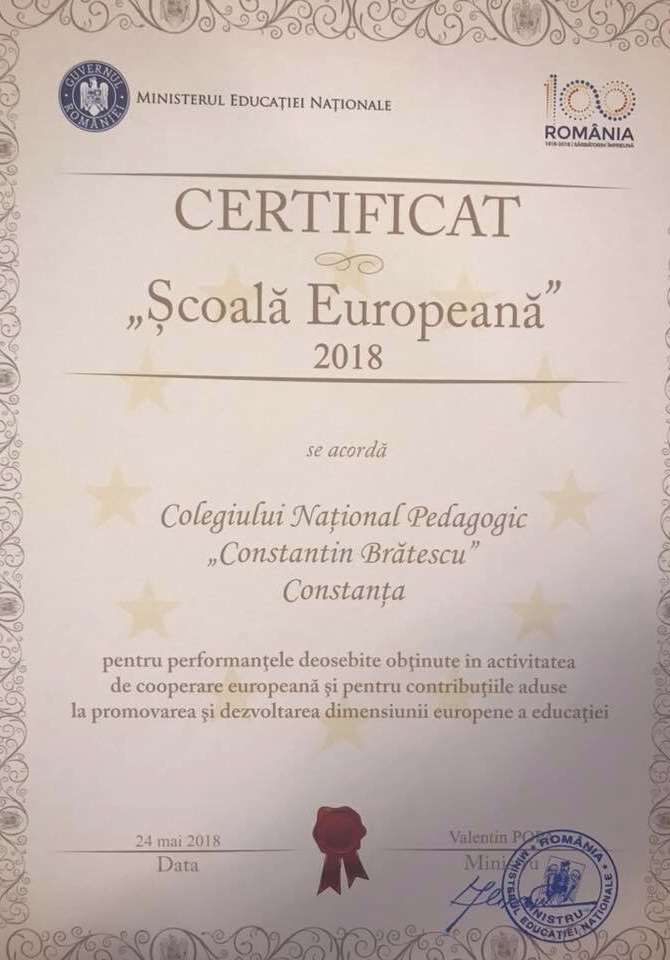
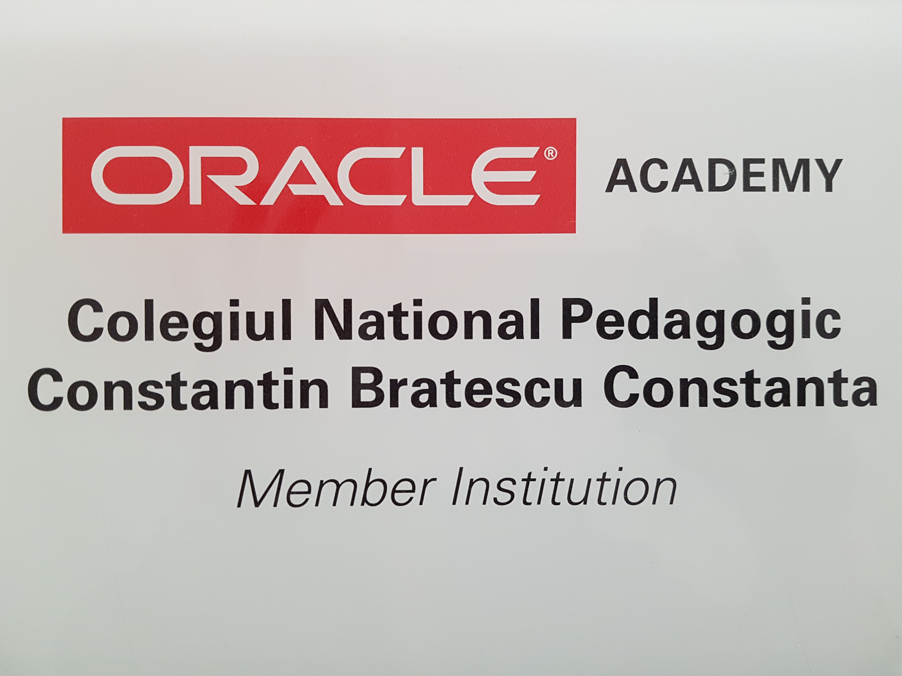

În data de 22 octombrie 1893, Take Ionescu, ministrul Cultelor şi al Instrucţiunii Publice de atunci, semnează Ordinul de înfiinţare a şcolii, scopul acesteia fiind de a pregăti învăţători pentru Dobrogea. La 1 noiembrie 1893, Ion Bănescu este numit directorul şcolii. În critica de specialitate, Eugéne Pittard evidenţiază, de altfel, contribuţia lui Ion Bănescu la dezvoltarea şi modernizarea şcolii dobrogene.
În anul 1993, la aniversarea a 100 de ani de la înfiinţarea Şcolii Normale ,,Constantin Brătescu” – instituţia a primit titlul onorific de Colegiul Naţional Pedagogic ,,Constantin Brătescu”, primul Colegiu Naţional din această parte a Ţării. Ministrul Educaţiei, prof. univ.dr. Liviu Maior, reliefa că ,,în calitate de responsabil al destinelor învăţământului românesc, în actualul guvern, îmi îngădui a aprecia că existenţa de atâtea decenii a Şcolii Normale din Constanţa s-a constituit într-o valoroasă şi perpetuă sursă de reîmprospatare a corpului învăţătoresc şi profesoral din această parte transdanubiană, mai ales, a ţării, pe băncile Normalei tomitane formându-se, de asemenea, şi sute de alţi specialişti cu pregătire medie şi, mai apoi, superioară. Beneficiind de profesionişti cu recunoscută autoritate în corpul profesoral dobrogean, în viaţa publică a cetăţii, devotaţi misiunii de modelare a personalităţii viitorilor dascăli, Şcoala Normală din Constanţa s-a impus în rândurile unităţilor de profil din ţară ca una din instituţiile nu doar cu tradiţie, ci şi cu, am certitudinea, o înaltă responsabilitate şi exigentă în pregătirea şcolară a atâtor generaţii de elevi. Este o valoroasă experienţă, o tradiţie ce se cere a se continua, în consens, acum, cu exigenţele dezvoltării instrucţiunii publice din noua Românie de la finele veacului, într-o Europă ea însăşi în căutare de redefiniri ale unităţii spirituale şi morale, ale mai vechilor articulaţii psihopedagogice.”
Timp de două decenii, începând cu anul 1979, Colegiul Naţional Pedagogic ,,Constantin Brătescu” a fost Centru de perfecţionare a educatoarelor şi învăţătorilor din judeţele Constanţa şi Tulcea; în Centru s-au format circa 6000 de cadre didactice pentru toată Dobrogea.
Colegiul Naţional Pedagogic Constantin Brătescu din Constanţa a câştigat de patru ori consecutiv titlul de Şcoala Europeană, fiind singura instituție din Dobrogea și una dintre cele 4 școli din țară care au reuşit această performanță.
În contextul actual, Colegiul a devenit, astfel, un reper cultural al Constanţei care promovează învăţământul de calitate, performanţă, îmbinând într-un mod creativ inovaţia şi tradiţia validată de o existenţă de peste 120 de ani vechime.
Avizier
LINK-uri utile
Ministerul Educatiei Nationale
Inspectoratul Scolar Judetean Constanta
Casa Corpului Didactic Constanta
Primaria Municipiului Constanta
În anul 2018, Colegiul Naţional Pedagogic "Constantin Brătescu" împlineşte 125 de ani de la înfiinţare.
Pentru a cincea oară consecutiv Colegiul Naţional Pedagogic "Constantin Brătescu" a obţinut titlul de Şcoală Europeană (mai 2018)

Colegiul Naţional Pedagogic "Constantin Brătescu" este Eco Şcoală
Începând cu data de 10.04.2018, Colegiul Naţional Pedagogic "Constantin Brătescu" este Şcoală eTwinning
Colegiul Naţional Pedagogic "Constantin Brătescu" este membru al Oracle Academy

Colegiul Naţional Pedagogic "Constantin Brătescu" este partener al Consiliului Britanic pentru evaluările Cambridge